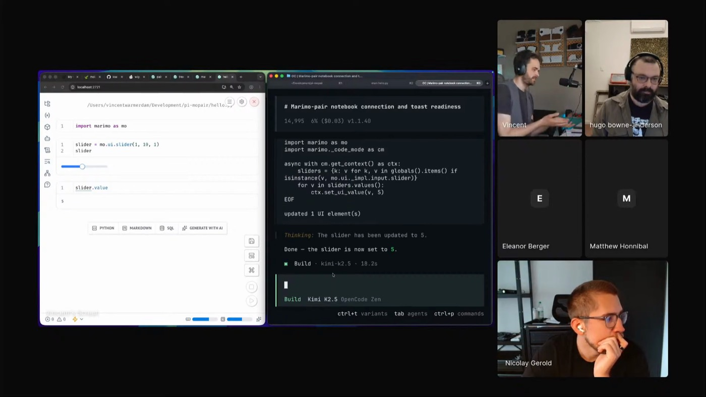

VINCENT WARMERDAM
MARIMO
SHARED CANVAS
LIVE NOTEBOOK STATE
HUMAN UNDERSTANDING
VINCENT WARMERDAM
MARIMO
SHARED CANVAS
LIVE NOTEBOOK STATE
HUMAN UNDERSTANDING
VINCENT WARMERDAM
Vincent shows notebooks as a shared canvas for human understanding and agent work. The notebook exposes live state, interactive controls, docs, and runtime variables so the human and the coding agent can act on the same running system. Wiggly Stuff supplies the interactive widgets, marimo keeps the surface reactive, and marimo pair gives the agent access to variables and controls.

THE SHARED CANVAS
Vincent draws pixels in a Paint-like widget, Python reacts every second, then the same surface becomes Conway's Game of Life. A straight line and an arc produce different growth. He changes the system and watches the system answer.
marimo pair puts the agent on that same surface. In the slider demo, OpenCode can read the live Python variables, inspect the current slider value, and change the UI control from the notebook scratch pad.
Wiggly Stuff supplies the interactive pieces, marimo keeps them reactive, and marimo pair gives the coding agent access to the runtime state Vincent is using to understand the system.

"The whole point of a notebook is that I eventually understand something and that's not something the agent can do for me."
FROM WIDGET TO PAIRING
PLAY UNTIL IT CLICKS
Wiggly Stuff is Vincent's notebook widget library. He calls the components "just a Lego brick": drawing surfaces, graphs, 3D widgets, zoomable views, and demos that also run in Wasm-hosted notebooks.
Draw pixels in a Paint-like widget, let Python react every second, then switch the same surface into Conway's Game of Life.
A straight line and an arc do different things. The user sees the result, changes the code, changes the drawing, and learns from the system pushing back.
A custom drawing widget makes pixels into Python data. A Game of Life loop turns a doodle into behavior. A slider becomes a Python value the agent can read and change.
Vincent, Python, widgets, and the agent keep handing state back to one another inside the notebook.
"I just want normal boring people to exchange notes."
THE BORING PERSON WINS
"It's okay to go slow if it means you understand it better."